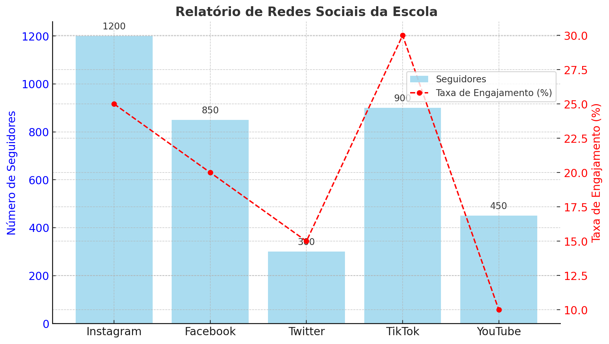

Relatório de Redes Sociais da Escola
Este gráfico mostra o desempenho das redes sociais da nossa escola em termos de seguidores e taxa de engajamento.
Este gráfico mostra o desempenho das redes sociais da nossa escola em termos de seguidores e taxa de engajamento.